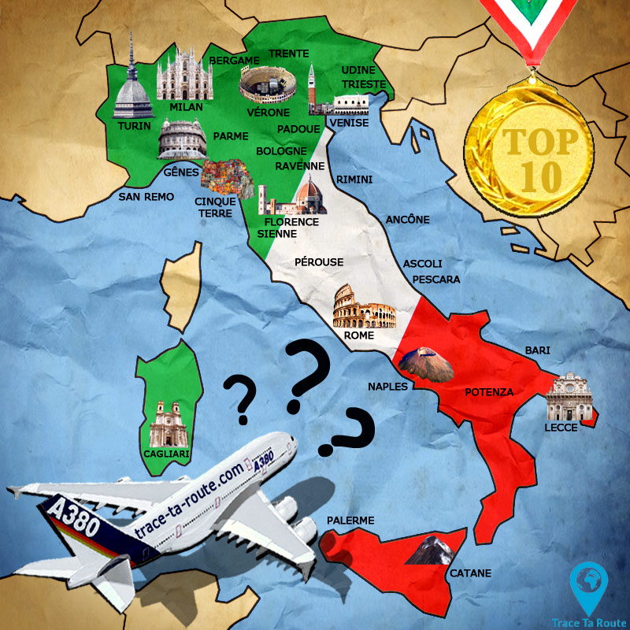

Avant l'empire romain, l'actuel territoire de l'Italie est occupé par différentes cultures et civilisations : grecques au sud,
peuples italiques originaires d'Europe Centrale au centre, civilisation étrusque,
Celtes, Ligures et Vénètes au nord... .
A partir de sa fondation au VIIéme siècle avant JC, Rome ne cesse de prendre de l'importance,
au Ier siècle avant JC elle domine tout le bassin méditerranéen et en 89 avant JC elle accorde la citoyenneté à tous les peuples italiens.
Suite aux troubles politiques, la République devient Empire romain puis en 293, l'empire est séparée en deux : emprire romain d'occident et empire romain d'Orient.
En, 313 l'empereur Constantin garantie la liberté de culte, le christianisme se propage alors à travers toute l'Italie.
L'Empire romain d'occident s'effondre sous les assauts des barbares au Véme siècle.
Jusqu'à la fin de la Renaissance, l'Italie se compose de différentes principautés, républiques,
royautés... très morcelées qui se livrent des guerres sanglantes auxquelles participent leurs voisins européens.
Les principautés italiennes morcelés vont peu à peu péricliter face aux géants européens jusqu'au XIXéme siècle.
Les premiers projets d'unification naissent de l'invasion napoléonienne mais celui ci redécoupe la péninsule en différents États.
C'est face à l'Autriche et surtout face à Napoléon III et Victor Emmanuel II que le royaume de Sardaigne va réussir à unifier une partie de l'Italie.
En 1861, le royaume d'Italie est proclamée. Venise est annexée au royaume en 1866 et Rome en 1870. Rome devient la capitale en 1871.
Le gouvernement est une monarchie constitutionnelle avec un parlement élu au suffrage restreint.
Une rupture entre le nord industriel plus moderne et le sud agricole à l'organisation quasi-féodal
conduira à des mouvements insurrectionnels violemment réprimés qui pousseront beaucoup de pauvres du sud à l'émigration.
Lors de la Première Guerre Mondiale l'Italie reste neutre au début bien que faisant partie de la triple alliance
(Empire Allemand, Empire Austro Hongrois, Royaume d'Italie) puis déclare la guerre à ses anciens alliés.
L'Autriche Hongrie est défaite en 1918 et le traité de Versailles redessine les frontières à la faveur de l'Italie mais pas autant qu'elle l'aurait souhaité.
Après guerre,
l'Italie est touchée par une grave crise économique qui conduira à la prise du pouvoir par les nationalistes conduits par Benito Mussolini.
Ce dernier est d'abord élu puis il installe petit à petit un État fasciste.
Lors de la Seconde Guerre Mondiale,
l'Italie est alliée à l'Allemagne Nazie et déclare la guerre à l'Angleterre le 10 juin 1940. L'Italie subit d'importante défaite et les alliés débarquent en Sicile en 1943.
Alors que le sud capitule et continue la guerre aux cotés des alliées, Hitler institue la république de Salo au nord avec Mussolini à sa tête.
Une guerre civile s'empare du pays, en avril 1945 Mussolini est pendu par des communistes alors qu'il tentait de fuir vers la Suisse.
En juin 1946, un referendum met fin à la royauté et la République est proclamée.
L'Italie est alors le théâtre d'un développement économie sans précèdent alors que les affrontements et les scandales politiques se multiplient.
Les années 1970, années de plomb, sont marqués par un terrorisme d'extrême gauche important.
Dans les années 1990 l'opération Mani Pulite (mains propres) met fin aux climats affairistes de la politique et amène à la dislocation des 3 grandes forces politiques : démocratie chrétienne, parti communiste et parti socialiste).